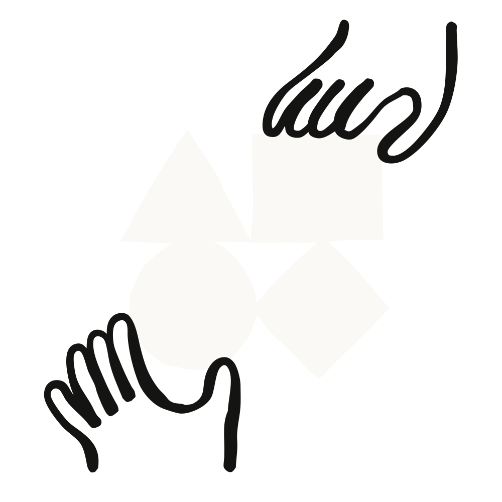

컴퓨터 사용, Skills API, Files API가 Claude 플랫폼에서 정식 출시(GA)됐다. 컴퓨터 사용에는 웹 애플리케이션에서 일하는 에이전트를 위한 브라우저 사용(browser use) 도구도 새로 추가됐다. 이 셋을 합치면 소프트웨어를 직접 조작하고, 우리 팀의 전문성을 적용하고, 완성된 파일을 돌려주는 에이전트를 만들 수 있다.

컴퓨터 사용(computer use)은 자기가 보는 소프트웨어를 직접 조작하는 에이전트를 만들게 해 준다. 스크린샷을 받으면, 에이전트는 키보드 앞에 앉은 사람이 하듯 클릭하고, 타이핑하고, 스크롤한다. 덕분에 애초에 자동화를 염두에 두고 만들어지지 않은 애플리케이션 안에서도 일할 수 있다.
새로 나온 브라우저 사용(browser use) 도구는 이 방식을 웹으로 확장한다. 스크린샷과 함께 페이지의 구조를 읽어서, 화면상의 좌표가 아니라 특정 입력 필드나 버튼을 지목해 동작한다.
Skills API와 Files API는 그 에이전트에게 우리의 전문성과 우리의 문서를 쥐여 준다.
예를 들어 보험금 청구(claims) 에이전트를 만든다고 하자. 이 에이전트는 Files API에서 접수 문서를 읽고, 팀의 접수 절차가 인코딩된 스킬을 따르고, 브라우저 사용 도구로 보험사 웹 포털에서 제출을 완료하고, 확인증을 다시 파일로 저장한다. 이미 정식 출시된 코드 실행(code execution)과 웹 검색(web search)도 같은 루프 안에 자연스럽게 들어간다.
"우리 에이전트는 API가 아예 없는 의료·보험 시스템 안에서 일한다. 새 컴퓨터 사용 도구로 바꾸자 가장 긴 청구 워크플로가 32분에서 13분으로 줄었고, 테스트한 모든 워크플로에서 작업당 비용이 약 30% 떨어졌으며, 완료율은 100%를 찍었다 — 프롬프트는 하나도 바꾸지 않고서."
Davide Locatelli · Research Engineer, Asteroid
"Skills API 덕분에 특화된 문서 생성 기능을 Box Agent에 넣는 일이 간단해졌다. 은행이라면 스킬 하나가 그 회사의 여신 심사 방법론과 승인된 메모 양식을 담아낸다. Box Agent는 이미 Box에 들어 있는 재무제표와 딜 문서에 그 스킬을 적용해, 출처가 명확한(source-grounded) 여신 메모를 만들어 애널리스트 검토에 올린다. 은행은 복잡한 워크플로용 에이전트를 매번 맨바닥부터 만들지 않고도 갖게 되는 셈이다."
Matthew Midson · Managing Director of Banking, Box
컴퓨터 사용 도구, 브라우저 사용 도구, Skills API, Files API는 이제 Claude 플랫폼에서 사용할 수 있다.
시작하려면 각 문서를 참고하라 — 컴퓨터 사용, 브라우저 사용 도구, Skills API, Files API.